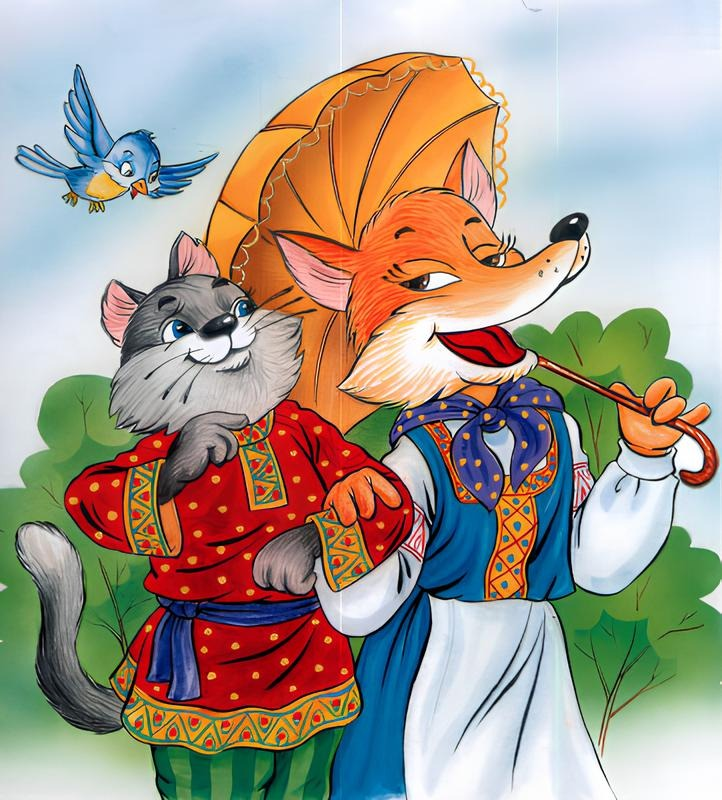
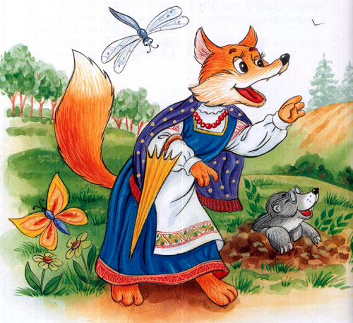
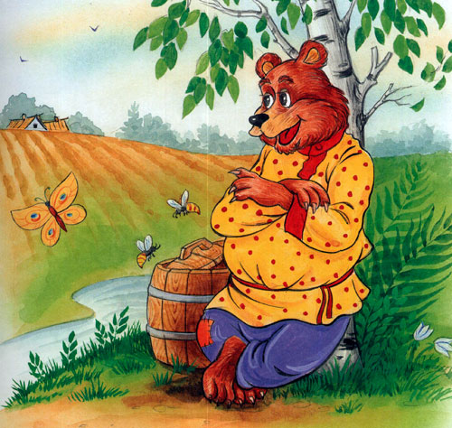
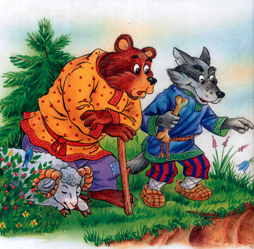
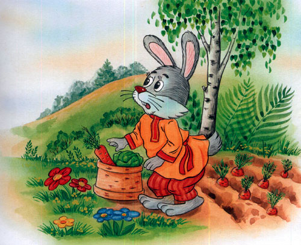
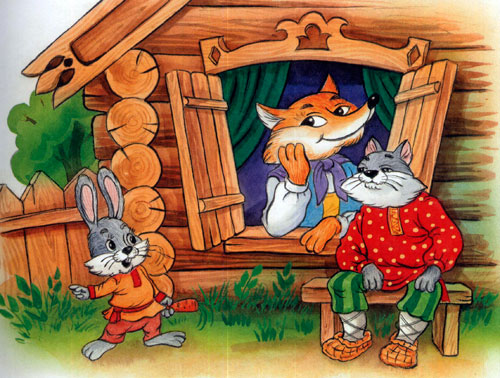
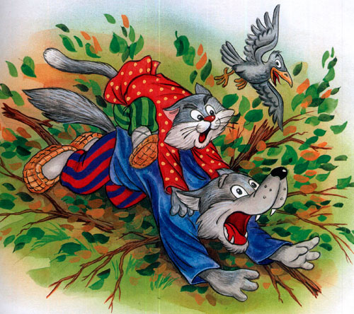

Кот и лиса

Жил-был мужик. У этого мужика был кот, только такой баловник, что беда! Надоел он до смерти. Вот мужик думал, думал, взял кота, посадил в мешок и понес в лес. Принес и бросил его в лесу — пускай пропадает.

Кот ходил, ходил и набрел на избушку. Залез на чердак и полеживает себе. А захочет есть — пойдет в лес, птичек, мышей наловит, наестся досыта — опять на чердак, и горя ему мало!
Вот пошел кот гулять, а навстречу ему лиса. Увидала кота и дивится: «Сколько лет живу в лесу, такого зверя не видывала!»

Поклонилась лиса коту и спрашивает:
— Скажись, добрый молодец, кто ты таков? Как ты сюда зашел и как тебя по имени величать?
А кот вскинул шерсть и отвечает:
— Зовут меня Котофей Иванович, я из сибирских лесов прислан к вам воеводой.
— Ах, Котофей Иванович! — говорит лиса. — Не знала я про тебя, не ведала. Ну, пойдем же ко мне в гости.
Кот пошел к лисице. Она привела его в свою нору и стала потчевать разной дичинкой, а сама все спрашивает:
— Котофей Иванович, женат ты или холост?
— Холост.
— И я, лисица, — девица. Возьми меня замуж!
Кот согласился, и начался у них пир да веселье.
На другой день отправилась лиса добывать припасов, а кот остался дома.
Бегала, бегала лиса и поймала утку. Несет домой, а навстречу ей волк:

— Стой, лиса! Отдай утку!
— Нет, не отдам!
— Ну, я сам отниму.
— А я скажу Котофею Ивановичу, он тебя смерти предаст!
— А кто такой Котофей Иванович?
— Разве ты не слыхал? К нам из сибирских лесов прислан воеводой Котофей Иванович! Я раньше была лисица-девица, а теперь нашего воеводы жена.

— Нет, не слыхал, Лизавета Ивановна. А как бы мне на него посмотреть?
— У! Котофей Иванович у меня такой сердитый: кто ему не по нраву придется, сейчас съест! Ты приготовь барана да принеси ему на поклон: барана-то положи на видное место, а сам схоронись, чтобы кот тебя не увидал, а то, брат, тебе туго придется!
Волк побежал за бараном, а лиса — домой.
Идет лиса, и повстречался ей медведь:

— Стой, лиса, кому утку несешь? Отдай мне!
— Ступай-ка ты, медведь, подобру-поздорову, а то скажу Котофею Ивановичу, он тебя смерти предаст!
— А кто такой Котофей Иванович?
— А который прислан к нам из сибирских лесов воеводою. Я раньше была лисица-девица, а теперь нашего воеводы — Котофея Ивановича — жена.

— А нельзя ли посмотреть его, Лизавета Ивановна?
— У! Котофей Иванович у меня такой сердитый: кто ему не приглянется, сейчас съест. Ты ступай приготовь быка да принеси ему на поклон. Да смотри, быка-то положи на видное место, а сам схоронись, чтобы Котофей Иванович тебя не увидел, а то тебе туго придется!
Медведь пошел за быком, а лиса — домой.
Вот принес волк барана, ободрал шкуру и стоит раздумывает. Смотрит — и медведь лезет с быком.

— Здравствуй, Михайло Иванович!
— Здравствуй, брат Левон! Что, не видал лисицы с мужем?
— Нет, Михайло Иванович, сам их дожидаю.
— А ты сходи-ка к ним, позови, — говорит медведь волку.
— Нет, не пойду, Михайло Иванович. Я неповоротлив, ты лучше иди.
— Нет, не пойду, брат Левон. Я мохнат, косолап, куда мне!
Вдруг — откуда ни возьмись — бежит заяц.
Волк и медведь как закричат на него:
— Поди сюда косой!
Заяц так и присел, уши поджал.

— Ты, заяц, поворотлив и на ногу скор: сбегай к лисе, скажи ей, что медведь Михайло Иванович с братом Левоном Ивановичем давно уже готовы, ждут тебя-де с мужем, с Котофеем Ивановичем, хотят поклониться бараном да быком.
Заяц пустился к лисе во всю прыть. А медведь и волк стали думать, где бы им спрятаться.
Медведь говорит:
— Я полезу на сосну.
А волк ему говорит:
— А я куда денусь? Ведь я на дерево не взберусь. Схорони меня куда-нибудь.
Медведь спрятал волка в кустах, завалил сухими листьями, а сам влез на сосну, на самую макушку, и поглядывает, не идет ли Котофей Иванович с лисой.

Заяц меж тем прибежал к лисицыной норе:
— Медведь Михайло Иванович с волком Левоном Ивановичем прислали сказать, что они давно ждут тебя с мужем, хотят поклониться вам быком да бараном.
— Ступай, косой, сейчас будем.

Вот и пошли кот с лисою. Медведь увидел их и говорит волку:
— Какой же воевода-то Котофей Иванович маленький!
Кот сейчас же кинулся на быка, шерсть взъерошил, начал рвать мясо и зубами и лапами, а сам мурчит, будто сердится:
— Мау, мау!..
Медведь опять говорит волку:
— Невелик, да прожорлив! Нам четверым не съесть, а ему одному мало. Пожалуй, он и до нас доберется!

Захотелось и волку посмотреть на Котофея Ивановича, да сквозь листья не видать. И начал волк потихоньку разгребать листья. Кот услыхал, что листья шевелятся, подумал, что это мышь, да как кинется — и прямо волку в морду вцепился когтями.

Волк перепугался, вскочил и давай утекать.
А кот сам испугался и полез на дерево, где сидел медведь.
«Ну, — думает медведь, — увидел он меня!»
Слезать-то было некогда, вот медведь как шмякнется с дерева обземь, все печенки отбил, вскочил — да наутек.
А лисица вслед кричит:
— Бегите, бегите, как бы он вас не задрал!..
С той поры все звери стали кота бояться. А кот с лисой запаслись на всю зиму мясом и стали жить да поживать. И теперь живут.